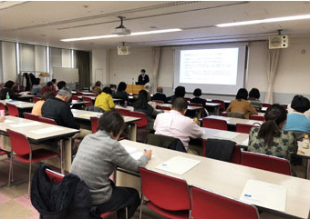

当財団には不安症やメンタルヘルスに関する様々な映像・音響関係のライブラリーがあります。
心の健康セミナーの講演会やYouTubeによる不安症や森田療法に関する解説動画、また森田療法の治療によって回復された方の克服体験談など、不安症の治療や克服のために役立つ貴重な動画を無料で視聴することができます。
また森田療法を創始した森田正馬博士の貴重な講義内容なども収録しています。うつ病やパニック症、強迫症、社交不安症など、現代病と言われる不安症の原因やその治療法である森田療法、克服体験談などを是非、お役立て下さい。
心の健康セミナー

当財団がYouTube公式チャンネルで定期的に配信している心の健康ビデオセミナーの内容を視聴できます。動画は、森田療法の考え方や治療法の解説に加え、各症状別の原因と治療法に分けて動画を配信しています。ご自身やご家族、友人・知人など各々の症状や悩みの内容に合わせて是非ご活用下さい。
ご覧になりたいカテゴリーのボタンを押してください。
克服体験談

森田療法の治療で不安症を克服した方々の体験談を動画にしています。どんな理由で不安症を発症したのか、またその症状や悩みはどんなものか、森田療法との出会いからその治療過程、克服ポイントなどを体験者が語ります。動画は各々症状別に分けた動画を質疑応答形式でわかりやすく解説。症状に合わせた克服法としてご参考にして下さい。
ご覧になりたいカテゴリーのボタンを押してください。